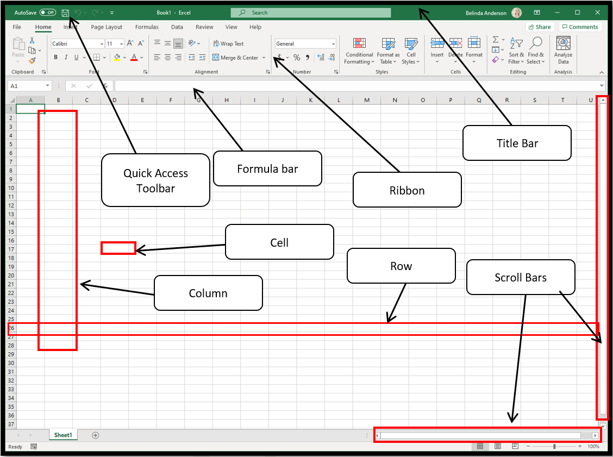

Microsoft Excel Complete Beginner Guide
Microsoft Excel is a powerful spreadsheet program used to organize data, perform calculations, analyze information, and create reports. Businesses, schools, and organizations around the world use Excel to manage numbers and make better decisions.
1. Introduction to Excel
Excel allows users to create spreadsheets where data is arranged in rows and columns. This makes it easy to calculate totals, track information, and analyze numbers. Examples of things Excel is used for:
- Budget planning
- Business reports
- Student records
- Data analysis
2. Understanding the Excel Interface

- Title Bar – shows the name of the workbook
- Ribbon – contains tools and commands
- Formula Bar – displays formulas inside cells
- Worksheet Area – where you enter data
- Status Bar – shows worksheet information
3. Understanding Cells
A cell is the small box where data is entered. Each cell has a unique address based on its column letter and row number.
- A1 = Column A Row 1
- B4 = Column B Row 4
- C10 = Column C Row 10
4. Entering Data
You can enter three types of data in Excel:
- Text – names or words
- Numbers – values used in calculations
- Dates – calendar information
5. Basic Formulas
Formulas allow Excel to automatically calculate values. All formulas start with the equals sign =
Example formula:
=A1 + A2
This formula adds the values from cell A1 and cell A2.
6. Common Excel Functions
Functions are built-in formulas that perform calculations quickly.
- SUM – adds numbers
- AVERAGE – calculates average values
- COUNT – counts cells containing numbers
- MAX – shows the highest value
- MIN – shows the lowest value
Example:
=SUM(A1:A10)
This adds all numbers from cell A1 to cell A10.
7. Formatting Data
Formatting improves how information appears in your spreadsheet.
- Change font style
- Add colors
- Adjust column width
- Add borders
- Format numbers as currency or percentage
8. Working with Tables
Tables help organize large amounts of information. They make it easier to sort, filter, and analyze data.
9. Creating Charts
Charts help visualize information using graphs. Common chart types include:
- Column chart
- Line chart
- Pie chart
- Bar chart
10. Sorting and Filtering
Sorting arranges data in order such as A-Z or smallest to largest. Filtering allows you to show only specific data while hiding the rest.
11. Saving and Printing
Excel document saving is this same as word if you read word lesson. How it goes?
- Click File
- Select Save As
- Choose location
- Enter file name
- Click Save
For detail explanation on Microsoft Excel, reach out to Dr. Dev who can explain to your satisfaction Message Dr. Dev for more explanation